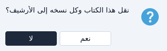
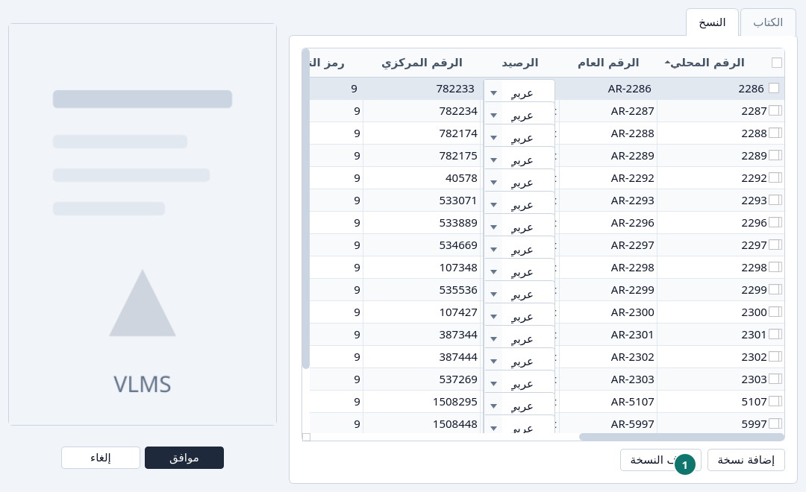
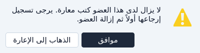
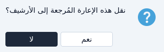
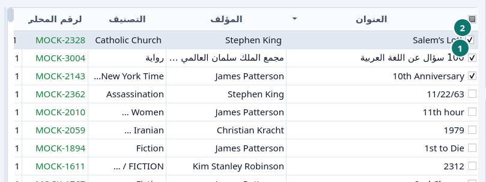
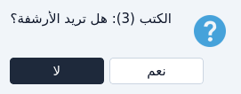

الإزالة
أرشفة عنوان أو نسخة أو عضو أو إعارة، ثم إزالتها نهائياً.
كتاب
ظلّل العنوان. اترك العلامات فارغة إذا كنت تقصد هذا العنوان وحده. اضغط حذف.


لا يترك العنوان في الفهرس. نعم يؤرشف العنوان ونسخه. أرقامها المحلية تبقى معها، فيمكن إعادة استعمالها. انظر إعادة استعمال رقم محلي.
إذا كانت نسخة ما زالت خارجة، يُرفض الحذف. أرجع تلك الإعارة أولاً.

نسخة
تعديل العنوان، افتح تبويب النسخ، ظلّل السطر، واضغط حذف النسخة. النسخة الخارجة لا تُحذف. موافق يحفظ الكتاب دون تلك النسخة. النسخة تُؤرشف، ولا تُتلف.


- حذف النسخة
عضو
حذف في الأعضاء يؤرشف العضو، إلا إذا كانت إعارة له ما زالت خارجة. عندها الرسالة تعرض الذهاب إلى الإعارة.


إعارة
لا تُؤرشف من الإعارة إلا إعارة مُرجَعة. ظلّلها واضغط حذف.


الإعارة المفتوحة أو المتأخرة يجب أن تُرجع أولاً. انظر الإرجاع والتمديد.
عدة أسطر معاً
حدّد الأسطر، بما في ذلك بعلامة العنوان. حذف يسمّي عندها العدد، ويعمل على كل سطر محدَّد. السطر الذي لا يمكن أرشفته يُتجاوز. انظر علامات التحديد.




نهائياً
إذا كان السجل المؤرشف يجب ألا يعود، افتح الأرشيف واتبع الترتيب. الإعارة يمكن أن تذهب في أي وقت. النسخة تنتظر ألا تسمّيها أي إعارة. الكتاب ينتظر ألا تبقى له نسخ. العضو ينتظر ألا تسمّيه أي إعارة.